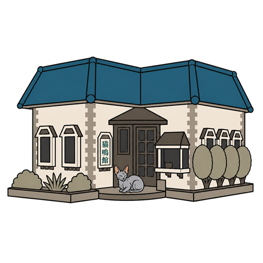
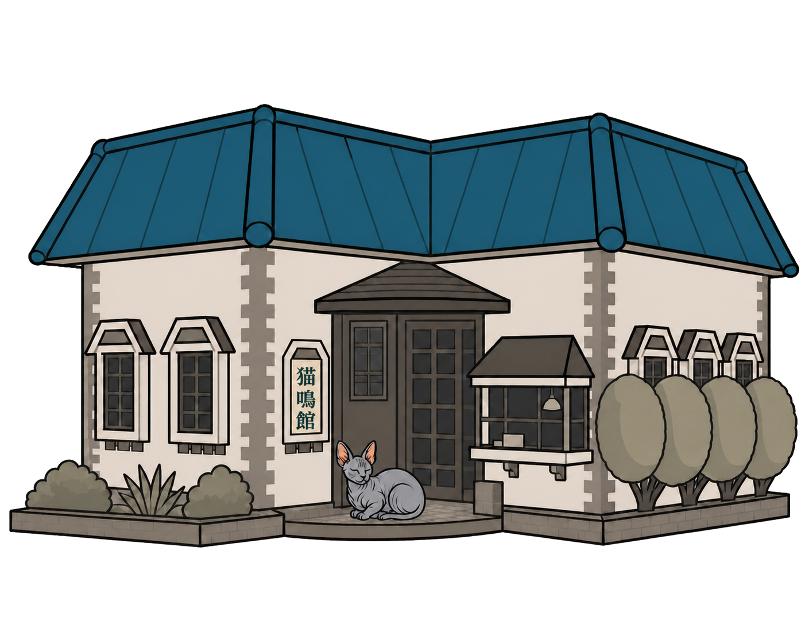
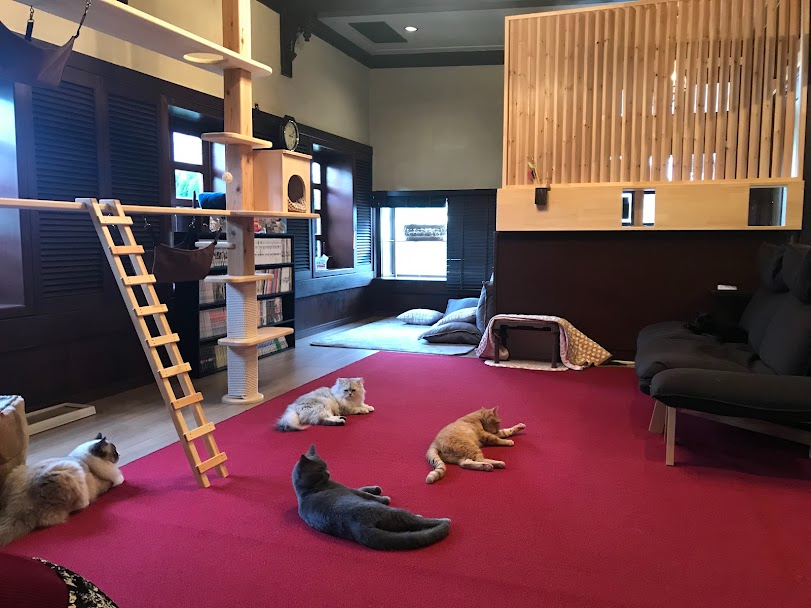

平日 ・ 60分
¥1,100 〜

昭和の喫茶店を改装した、青い屋根のねこカフェ。レトロで落ち着いた店内で、個性ゆたかな猫たちと時間を忘れて過ごせます。

もとは町の喫茶店だった建物を、猫がのびのび過ごせるよう、段差のないフラットな空間に改装しました。木のぬくもりとレトロな空気はそのまま。青い屋根が目印です。
人に慣れた猫たちが、そっと近づいてきます。漫画を片手に長居するのも、ただ眺めているだけでも。あなたのペースで、猫たちと過ごしてください。

※お名前・お写真・性格は、実際の猫キャストに差し替わります（現在 11匹）
@nekomeikan の写真が、このページにそのまま流れます。更新の手間なく、サイトはいつも“今日の様子”に。
月に2〜3回、猫たちの動画や休館日のお知らせを更新しています。見つけにくかった発信も、サイトならここにまとめて楽しめます。
月に4回ほど、Xで営業や猫たちの近況をお届けしています。こちらには、大切なお知らせを掲載します。
※お知らせは手動で編集・更新できます（下は記入例です）
店主は、料理人として長く腕をふるってきました。やがて「猫と人が、ともにやすらげる場所をつくりたい」と思い立ち、2018年、この亀田の地に猫鳴館を開きました。
一匹一匹の体調や気持ちに寄り添いながら、日々ていねいに向き合っています。
— 猫鳴館 店主 ※文章は下書きです。想いを伺って仕上げます。
※料金は一例です。最新の内容に差し替えます。